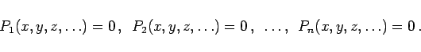
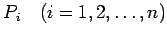
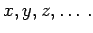

Inhalt Index DeskTop Bronstein

 Arithmetik Algebraische und transzendente Gleichungen Umformung algebraischer Gleichungen auf die Normalform
Arithmetik Algebraische und transzendente Gleichungen Umformung algebraischer Gleichungen auf die Normalform


Jedes algebraische Gleichungssystem kann auf die Normalform, d.h. auf eine polynomiale Darstellung gebracht werden:
|  | (1.146) |
Die  sind Polynome in 
| Beispiel |
|
Gesucht ist die Normalform des Systems der Gleichungen: |